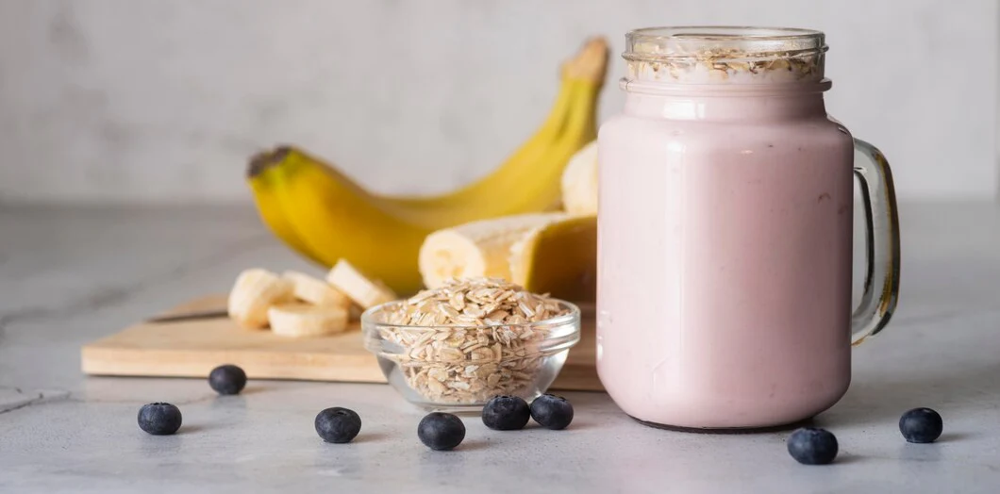

Weight Gainer Shake

Description
This nutritious heavy gainer shake is the perfect thing for you hard gainers out there. It provides nearly 1400 calories (depending on a few options you may want to add) and boasts over 70 grams of protein per portion.
This can be made with various different flavours depending on your taste. Whether choclate, strawberry, or banana be you favourite flavour, it is all possible in this highly dense and vitamin rich shake. This shake is
perfect for hard gainers due to its high calorie and high protein nature. Of course you still have to pick the right ingredients (and brands) for the job so lets get into that!
Ingredients
- Oats: 100 grams
- Peanut Butter: 50 grams
- Banana: x1
- Protein Powder: 1.5 scoops
- Milk: 250ml
- Water: 250ml
- Blender
- Food scales
Steps
- Place all of you oats in a blender and dry blend for 30 seconds. (stir if needed)
- Add the peanut Butter to the oat mix.
- Chop up the banana and add it in the blender.
- Add the milk.
- Add the protein powder. (this is what determines the flavour)
- Add the water.
- Then give it a stir. Feek free to stir in any of the steps after putting the liquid in if your blender is smaller, this is so you can pack more space.
- Blend for 45 seconds to a minute, then pour into your container.